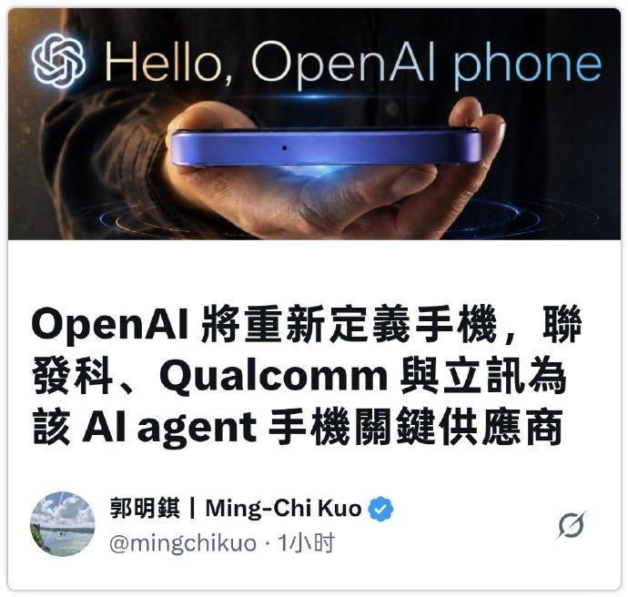
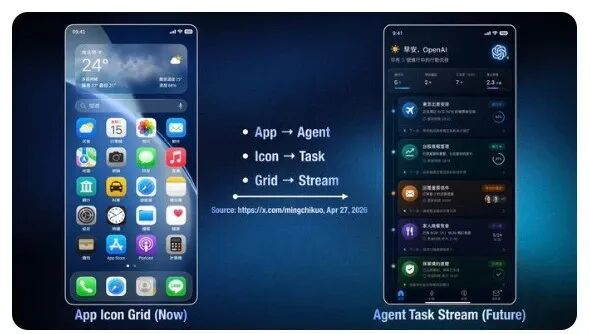
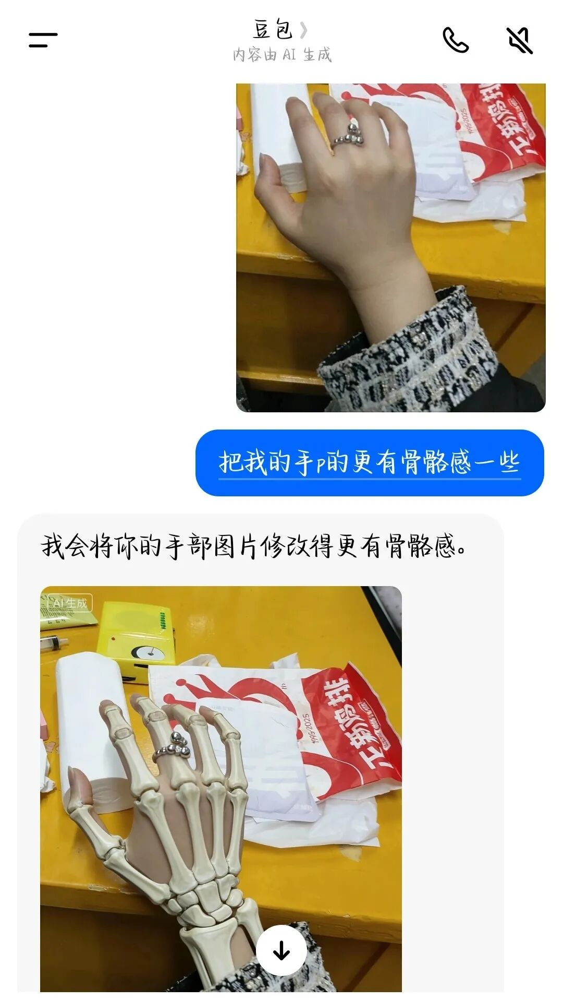
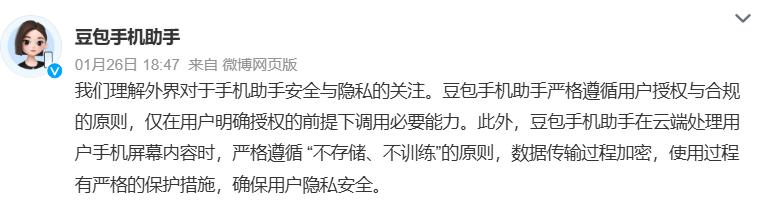

AI手机，是手机厂商的生意，还是OpenAI的？
OpenAI能给AI手机打个样吗？
OpenAI迈出了最“激进”的一步。
近日，天风国际证券分析师郭明錤透露，OpenAI正在自研手机，将与联发科、高通合作开发手机处理器，立讯精密为系统协同设计与制造商，预计2028年量产。

图源：社交媒体截图
当硬件卷不出质变级体验，“AI”正被手机行业视作驱动下一轮换机潮的希望。不过，AI手机的生意，不止手机厂商想做，就像字节跳动找手机厂商合作豆包手机一样，OpenAI也不甘心只做模型供应商。
那么，OpenAI要做的AI手机究竟是什么模样？OpenAI坚持自研，能否像苹果当年重新定义手机那样，给AI时代的人机交互下一个新定义？相比于轻装上阵的字节，OpenAI的前路显然布满更多难题。
OpenAI押注硬件
OpenAI并不是今天才想做硬件的。过去一年里，市场已经陆续传出OpenAI自研耳机、智能音箱、眼镜的消息。曾有行业人士表示，那些有可能成为下一代计算平台的终端，OpenAI一个都不会落下。
这次OpenAI瞄准手机，选的是所有硬件里最难啃、门槛高、容错率低的一条赛道。根据郭明錤分析，OpenAI做手机主要出于两方面的原因。
首先，虽然眼镜、耳机、“AI Pin”等各种智能硬件的销量都在飞速增长，但在未来，手机仍然是数量规模大的终端设备，也将是适合Agent运行的载体。
未来的AI手机，将不会拘泥于一块屏幕。一位前百度产品经理表示，未来的AI手机不仅能帮用户执行任务，而且是感知到用户状态后主动执行，无需下达指令。
比如用户开完会需要出差，手机听到出差相关的对话后主动订票、订酒店，不需要用户每天看几十次手机，和手机的交互也会从触摸屏幕变为语音对话为主。
郭明錤分享了他眼中的AI手机概念图，在未来形态的手机中，APP都会消失，前端被一系列能执行任务的Agent替代。

图源：社交媒体截图
Agent想要丝滑地融入生活，需要原生的操作系统和软硬件协同，OpenAI如果只做模型，未来永远只是寄生在别人生态里的“插件”。
现在的AI，被现有的手机系统牢牢锁死在聊天框里，很容易像手机厂商取代某些应用预装那样，受到各种“卡脖子”的限制。OpenAI只亲自下场做硬件，将芯片、传感器调度、系统权限、用户数剧等所有环节都捏在自己手里，才能真正掌握下一代交互的话语权。
除此之外，OpenAI争抢硬件终端还有一个重要原因——互联网的数据已经不够用了。
模型依赖线上文本数据训练，缺少对现实场景的感知与理解，例如有用户对豆包表示“把自己的手P得更有骨骼感”，结果收到堪比CT图像的照片，令人哭笑不得。这就是源于AI无法理解真实世界的物理形态，以及人类生活化的语义语境。

图源：豆包截图
掌控硬件终端，模型厂商便能合规收集海量物理世界多维度数据，AI才有看懂现实的可能。这也是OpenAI、字节等软件公司不惜重金跨界的根本原因。
只不过，OpenAI没有像字节一样找手机厂商合作，而是走纯自研路线。目前，字节正与中兴合作打造第二代豆包手机，而OpenAI的处境比字节更为艰难。在海外市场，手机行业是苹果、三星双垄断格局，OpenAI想找既有制造能力、又愿意让渡系统主导权的手机厂商合作，几乎找不到合适的对象。摆在OpenAI面前的，只有纯自研这一条独木桥。
OpenAI的技术大考
对于OpenAI这类模型厂商而言，自研任何硬件都意味着从零开始，要解决的技术难题可不止一个。
首先是软件层面，如何让Agent真正实用起来？这也是国内手机厂商正在解决的问题。
国内手机的AI化始于2023年，如今华为、OV、小米、荣耀自家的手机助手都已经与大模型深度整合，但现在手机的AI程度，别说伴随主动感知了，就算接受指令被动执行任务也常常交出半成品。经常有用户吐槽自己的手机智能助手，让它改个闹钟、做三位数以内的数学计算甚至都完不成。
真正能做到“一句话点外卖”“一句话帮我做旅游攻略”这类跨应用、全流程自主执行的，只有被封禁之前的豆包手机。
豆包手机确实让使用更加便捷，也是目前外界能接触到的智能程度的AI手机。但是，由于豆包手机选择的GUI Agent路线有更高的安全风险，国内手机厂商大多选择了更稳妥的“API调用”路线——即与主流App达成深度合作，通过预置接口让AI助手调用特定功能，而非像GUI Agent那样直接模拟人类点击屏幕操作App。

图源：微博截图
为了进一步保证隐私与数据安全，以及减少延迟，手机厂商都在探索端侧AI。也就是把大模型直接装进手机本地，尽可能不把用户对话、行为数据上传云端，AI思考、指令判断、任务处理都在手机本地完成。
欧美市场对数据收集和隐私风险监管的严苛，也让OpenAI不得不走强端侧路线，至少能在手机本地运行小模型，持续理解、记忆用户的日常。一些高强度的复杂任务，再交由云端处理。
这对OpenAI的软硬件协同能力提出了极高的要求。OpenAI长期只做云端大模型，硬件产业积累薄弱，它需要做出能在手机本地跑得动的模型，设计出适配模型计算特征的芯片，以及让Agent能自由调度各应用的原生AI操作系统。OpenAI从芯片、系统到AI模型，全都从零开始研发，这或许也是为什么，OpenAI预计2028年才能实现手机量产的原因。
为了加速研发的进度，OpenAI选择用中国的供应链能力，来补自己硬件经验的短板。
根据郭明錤披露的信息，OpenAI的供应链版图已经初步成型：联发科、高通负责手机处理器开发；立讯精密为系统协同设计与制造商。立讯精密深度参与AirPods、Apple Watch乃至iPhone的整机组装，拥有从零部件到系统级封装的全链条能力。联发科、高通作为全球芯片龙头，分别擅长旗舰平台NPU和功耗控制。
一台手机的诞生，远不止三家核心供应商能搞定，为此，OpenAI还从苹果挖来了不少高管。
“趣解商业”了解到，如今OpenAI的硬件团队超过200个人，其中包括前苹果首席设计官Jony Ive、前苹果产品设计主管Tang Tan（曾主导iPhone和Apple Watch 的产品落地）等多个苹果公司的关键角色。

图源：社交媒体截图
只不过，人才能带来技术能力，却带不来苹果数十年积累的组织能力和供应商关系网络。一部高端智能手机背后是数百家级供应商，涉及上千道工序的精密协同。OpenAI的供应链版图虽然画好了“骨架”，但填满“血肉”的过程，才是对它真正的考验。
值得注意的是，国内厂商的AI手机的迭代也在加速，待到2028年，华为、小米、荣耀们会不会抢先完成AI Agent全场景交互的落地呢？未来AI手机的话语权花落谁家，值得进一步关注。